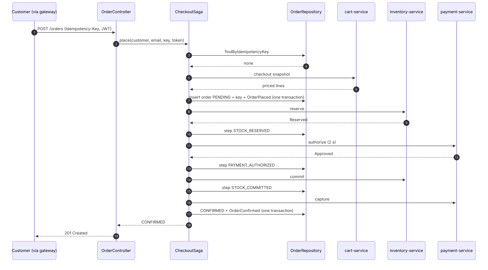

order-service: low-level design#
Part of the e-commerce system design. Animated version: walkthrough.
1. Responsibilities#
| Does | Does not |
|---|---|
| Turn a priced cart into an order and run the checkout saga | Price products (catalog) or keep carts (cart) |
| Guarantee one order per idempotency key | Hold stock (inventory) or talk to the payment provider (payment) |
| Compensate every failure: release, void, return, refund | Send emails (notification reacts to its events) |
| Cancel confirmed orders on request | Ship orders (future fulfilment service) |
| Finish interrupted sagas | |
| Serve order history |
2. Guarantees#
| Guarantee | How |
|---|---|
| One order per request | idempotency_keys (customer_id, key) primary key; a repeat returns the stored order with no downstream calls |
| No charge without an order, no order without a charge | Saga with explicit compensations; payment is captured only after stock is committed |
| No lost progress | Each step is persisted (saga_step) before the next call; the recovery job resumes from it |
| Never charged for a cancelled order | An unknown payment outcome is voided, and payment-service voids a late authorisation |
| Events if and only if the change commits | Events go into the outbox in the same transaction as the order |
| No lost updates | Optimistic locking on version |
| Fast lookups at any size | Monthly partitions; the order id (UUIDv7) gives the partition directly |
3. Module diagram#

Dependencies point inwards. domain uses only java.*; application uses only domain; adapters never depend on each other.
HexagonalArchitectureTest enforces all three rules.
4. Interaction diagram#

5. Class diagram#

The results are sealed types, so every switch in the saga is exhaustive: adding an outcome without handling it fails to compile.
6. Checkout: sequence#

The failure paths are drawn in the system sequence diagrams (§5.6 to §5.9).
| Outcome | HTTP | What was undone |
|---|---|---|
| CONFIRMED | 201 (200 on replay) | — |
| IN_PROGRESS | 202 + Location |
Nothing: money is authorised, recovery finishes the order |
| OUT_OF_STOCK | 409 | Nothing was reserved |
| PAYMENT_DECLINED | 402 | Stock released |
| PAYMENT_UNKNOWN | 504 | Payment voided, stock released |
| DEPENDENCY_UNAVAILABLE | 503 + Retry-After |
Stock released (best effort) |
| FAILED | 502 | Payment voided, stock returned |
7. State diagrams#

Saga steps: STARTED → STOCK_RESERVED → PAYMENT_AUTHORIZED → STOCK_COMMITTED → PAYMENT_CAPTURED → COMPLETED, with
COMPENSATING → COMPENSATED on failure and REFUNDING while cancelling.
| Recovery from step | Action |
|---|---|
| STARTED, STOCK_RESERVED, COMPENSATING | Void any authorisation, release stock, cancel (CHECKOUT_ABANDONED) |
| PAYMENT_AUTHORIZED, STOCK_COMMITTED, PAYMENT_CAPTURED | Continue forward: commit, capture, confirm |
| REFUNDING | Refund, return stock, cancel |
8. Data model#

The DDL, including ensure_order_partitions(months_ahead), is in
V1__order_schema.sql.
Indexes:
* (customer_id, created_at desc, id desc) for keyset-paginated history.
* A partial index on updated_at for in-flight orders, used by recovery.
* A partial index on unpublished outbox rows.
9. Background work#
| Job | Runs | Interval | What it does |
|---|---|---|---|
| Outbox relay | every replica (SKIP LOCKED) |
100 ms | Publishes order events to order.events, keyed by order id |
| Saga recovery | one replica (ShedLock) | 15 s | Resumes orders PENDING or CANCELLING for more than 30 s |
| Partition maintenance | one replica (ShedLock), and at start-up | daily 02:07 | Creates monthly partitions three months ahead |
| Outbox purge | one replica | daily | Deletes published rows older than 7 days |
10. Scaling and performance#
- Pods: stateless, 3–20 replicas on CPU. Each has 30 pooled connections behind PgBouncer.
- Virtual threads: a checkout spends most of its time waiting on three downstream calls, so a pod handles thousands of concurrent checkouts.
- Writes per checkout: about 7 short transactions (insert, 4 step updates, confirm, outbox), each a few milliseconds. No transaction spans a network call.
- Partitioning: keeps indexes small and makes archiving a cheap
DETACH PARTITION. Beyond one primary, Citus can shard orders bycustomer_id(SPEC §13.1).
11. Failure handling#
| Failure | Behaviour |
|---|---|
| cart-service down | 503 DEPENDENCY_UNAVAILABLE; no order created |
| inventory-service down at reserve | Release attempted, order cancelled, 503 |
| payment-service slow (> 2 s) | Treated as unknown: void requested, stock released, 504, customer not charged |
| inventory or payment down after authorisation | Order stays PENDING, 202 returned; recovery completes it within about 30 s once the dependency is back |
| Crash at any step | Recovery resumes from the recorded step |
| Two requests with the same key | The second sees the key (or loses the insert race) and returns the first order |
12. Tests#
| Test | Kind | Proves |
|---|---|---|
OrderTest |
domain | Totals, events, idempotent cancel, cancellation rules, money rules |
CheckoutSagaTest |
application with test doubles | Happy path, idempotent replay, out of stock, declined, unknown, outages before and after authorisation, expired reservation, failed capture, recovery, customer cancellation, ownership, millisecond ids |
UuidV7Test |
adapter unit | Version, variant, embedded time, ordering |
HexagonalArchitectureTest |
ArchUnit | Layering and adapter independence |
OrderContainersIT |
PostgreSQL + Kafka + real HTTP | End-to-end checkout, monthly partition used, replay, 402 and 409 mappings, events on Kafka, private paginated history, cancellation, validation |